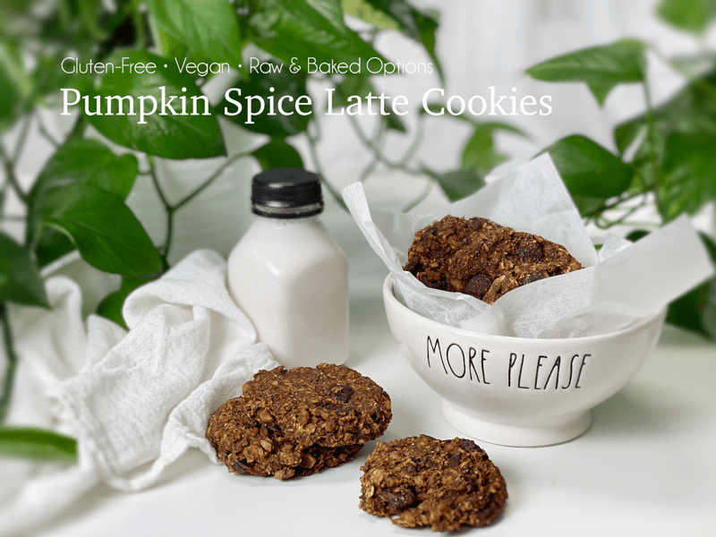
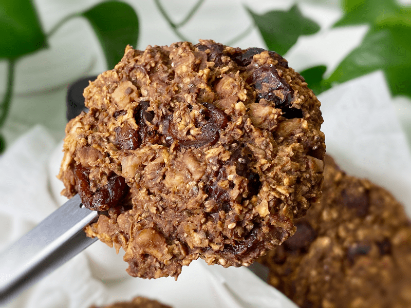

Pumpkin Spice Latte Cookies | Raw and Baked Option
Pumpkin Spice Latte Cookies are based in oats, loaded with spice, flavored with coffee, filled with chewy pockets of dried cranberries, and even have a nutty crunch of chopped pecans, all with a subtle hint of chocolate. Now that’s a cookie!

When fall peaks, I feel such a refreshing adjustment as I begin the preparations to embrace the cold. Frankly, I prefer layering on clothes to being in sweltering heat that you just can’t get away from. After all, we can take off only so much clothing.
But I am pretty sure we can all agree that the cold is much more enjoyable when experienced through a window, or under heavy handmade quilts with some sort of heat source happening nearby.
Everything seems to slow down in the colder months. Just the thought of winter makes me want to snuggle in bed and nap. But life goes on, and things need to be done… laundry, cleaning, plowing, making snow angels, creating yummy healthy food.
So when cold weather strikes a chilling blow, it makes sense to consume healthy, warming, and nutritionally concentrated foods. To help you be productive throughout your day, I designed a cookie to keep that internal thermostat nice and toasty.
The spices used in these cookies warm the digestion, increase the metabolism, have the effects of raising the yang energy (qi) of organs, and help improve circulation thus dispelling the cold. All that rolled up into a neat package referred to as a “cookie.” So not only do I have your back in flavor and nutrients, I have your cold toes, too! I hope you enjoy these delicious cookies. Please leave a comment below. Blessings, amie sue
 Ingredients:
Ingredients:
Yields 22 (1/4 cup measurement cookies)
- 3 1/2 cups rolled, gluten-free oats, soaked
- 1 cup chopped pecans, soaked
- 1 1/2 cups dried cranberries
- 1/4 cup chia seeds
- 1/3 cup coconut sugar
- 2 Tbsp raw cacao powder
- 1 Tbsp pumpkin pie spice
- 1 Tbsp instant espresso coffee
- 1 tsp ground Ceylon cinnamon
- 1/2 tsp Himalayan pink salt
- 3/4 cup pumpkin puree, raw or canned
- 1/4 cup raw applesauce
- 1/4 cup maple syrup
- 1 tsp vanilla extract
- 1 tsp liquid NuNaturals stevia
Preparation:
- After soaking the oats, drain and discard the soak water. Rinse and hand squeeze the excess water from the oats.
- Drain and discard the soak water from the pecans and give them a final rinse.
- In a large bowl combine the oats, pecans, cranberries, chia seeds, coconut sugar, cacao powder, pumpkin spice, instant coffee, cinnamon, and salt. Toss everything together, making sure to seperate any cranberries that are clumped together.
- Add the pumpkin puree, applesauce, maple syrup, vanilla, and stevia. Mix well and let it rest for 10 minutes to activate the chia seeds, which will thicken the batter.
Dehydration Method
- Using a 1/4 or 1/2 cup cookie scoop, place the cookies on non-stick sheets that come with the dehydrator.
- I did 9 per tray, leaving space in between.
- Once a tray is full, pick it up by the bottom two corners. Lightly tap the tray on the countertop two times, turn the tray, and do it again on each edge. This will somewhat flatten the dough, creating the perfect cookie shape.
- Dry at 145 degrees (F) for 1 hour, reduce to 115 degrees (F), and continue to dry for 8-10 hours or until the desired dryness/moisture is achieved.
- Halfway through, transfer the cookies to the mesh sheet to speed up the dry time.
- Dry times will always vary depending on the climate, humidity, model of the machine, and how full it is.
- Why do I start the dehydrator at 145 degrees (F)? Click (here) to learn the reason.
- Allow to cool, then store in an airtight container for 5-7 days or freezer for 1-3 months.
Baking Method
- Preheat the oven to 350 degrees (F) and line a cookie sheet with parchment paper.
- Using a 1/4 or 1/2 cup cookie scoop, place the cookies on the cookie sheet. They won’t expand, but leave a little space between them.
- Bake for 25 minutes.
- As they bake, they don’t change color all that much, so don’t use that as an indicator of doneness. They should be firm to the touch.
- Allow to cool, then store in an airtight container for 5-7 days or freezer for 1-3 months.
FAQ About Rolled Oats
- Amie Sue, is it possible to purchase raw oats? Yes, indeed. Please read here where you can order them (here).
- I always heard that oats contain gluten. Is this true? No, but you need to be aware of the oats that you buy… Please read (here).

Good ol’ close-up photo!
© AmieSue.com